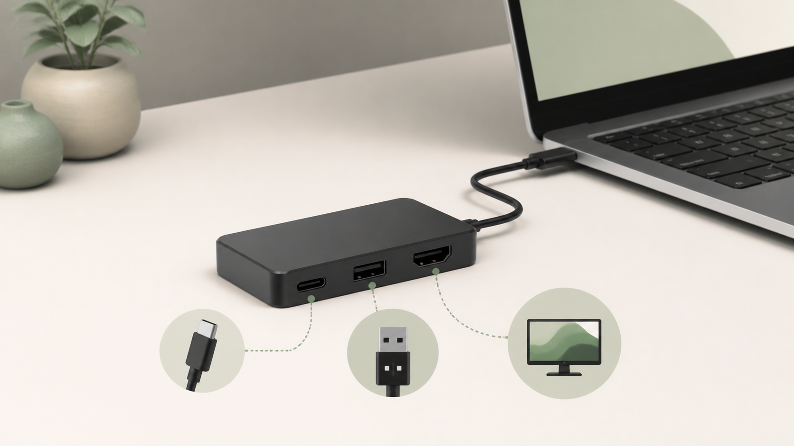

MAC PERIPHERALS / DESK SETUP
Anker 332を選ぶ前に。Macのポート不足を条件で見極める
広告：本ページにはAmazonアソシエイトリンクが含まれます。商品情報は公式情報とAmazon掲載情報を確認して作成しています。実機での検証結果ではありません。

Anker 332 USB-Cハブの端子構成と対応条件を公式情報から整理し、Macのポート不足を解消できるか判断するガイドです。スペックの多さではなく、先に用途と設置条件を決めてから判断します。

Anker 332 USB-C ハブ (5-in-1) | 【MacBook/Windows専用】100W PD対応 4K@30Hz HDMI 5Gbps USB-C/USB-A ※スマホ・iPad非対応 簡単接続
仕様と販売状況はAmazonの商品ページで確認できます。
Amazon.co.jpで確認する公式仕様から先に確認すること
Anker 332（A8355）は、HDMI画面1台とUSB周辺機器をまとめたいときの候補です。ただし「USB-Cが2口ある」「100W対応」という表示だけで、何でも接続できると判断しないでください。端子の形ではなく、端子ごとの役割を分けて見る必要があります。
公式仕様では、HDMIが最大4K・30Hz、データ用USB-Cが1口、データ用USB-Aが2口で、データ転送は最大5Gbpsです。もう1口のUSB-CはPD入力用で、最大100W入力に対してノートPCへのパススルー出力は最大85W。USB-C経由の映像出力には対応しません。詳しい条件はAnker公式の仕様・注意事項を確認してください。
ここから先は、その仕様を購入判断へ落とし込むための編集部の提案です。実機で速度や相性を測定した結果ではありません。
4Kで表示できることと、欲しい使い心地は別
たとえば、外部画面で長文を読み、たまに資料を表示する人と、画面上の動きを常に追う人では、同じ「4K対応」でも確認したい点が違います。普段使っている解像度とリフレッシュレートを書き出し、その状態を維持することが必須かを先に決めます。4K・60Hzが必要条件なら、この製品の上限とは一致しません。使いたい画面を接続してから設定で何とかするのではなく、購入前の除外条件にしてください。
100W充電器をつなげば、Macへ100W届くわけではない
給電をまとめる目的なら、いまのMacで必要とする電源条件と、ハブ経由の出力上限を別々にメモします。充電器・ケーブル・ハブ・Macのどこが制約になるかを確認するためです。机で充電をまとめたいだけなのか、負荷の高い作業中も現在と同じ給電条件を維持したいのかで、選ぶ構成は変わります。数字だけで不安が残る場合は、画面とUSB機器をハブへ、電源はMacへ直接接続する構成も比較候補です。
使い方と設置を分けて考える
接続リストを「映像・データ・給電」に分ける
まず紙やメモアプリに、接続したい機器を一つずつ書きます。モニター、キーボードのレシーバー、マウス、外付けSSD、充電器と並べたら、横に用途を書き足してください。「USB-C機器」という分類だけでは、映像を出したいのか、ファイルを読みたいのか、電気を入れたいのかが分かりません。
次に、ハブの各端子へ一つずつ割り当てます。充電用USB-CにSSDを、データ用USB-CにUSB-Cモニターを割り当てるような配置は、端子の役割と合いません。変換ケーブルを追加する前に、この表の段階で接続が成立するかを確かめると、買い足しを減らせます。
具体例：HDMI画面とUSB-A機器をまとめたい場合
MacへHDMI画面1台とUSB-Aの入力機器を接続したいなら、ハブへ集約する目的が明確です。このとき確認するのは、画面側にHDMI入力があるか、必要な表示条件が合うか、USB-A端子が足りるかの3点です。購入前にこの3点を答えられるなら、端子数の多さに引っ張られずに判断できます。
反対に、有線LAN、SDカード、USB-C映像出力も必要なら、別の機器やハブを含む構成比較が必要です。「5-in-1」の数字は、欲しい5機能がそろうことを意味しません。必要機能を先に列挙し、足りないものを確認する順序が大切です。
外付けSSDが主目的なら、作業の待ち時間から考える
写真や動画を外付けSSDへ頻繁に移す場合は、「USB機器を接続できる」だけで判断せず、いま何を待っているのか整理します。読み込み、書き込み、ネットワーク転送、アプリの処理待ちは別の問題です。この製品のデータ転送上限と、SSD・ケーブル・Macの仕様を照合してください。規格上限は実測速度の保証ではなく、入力機器をまとめる用途と大容量データを移す用途も分けて考えます。
常設でも、取り外す手順を残す
ハブを机の裏へ固定する前に、Macを持ち出すときに何を外すか、帰宅時に何を戻すかを決めます。外付けストレージをつなぐなら、取り外し操作を済ませてからケーブルを抜く手順まで含めて構成を考えてください。端子が見えない位置へ隠すほど、どの機器が接続中なのか把握しにくくなる点にも注意が必要です。
ケーブルに無理な張力をかけず、接続先を確認しやすい場所へ置けるかも購入判断の一部です。見た目を整えるためのハブが、抜き差しのたびに机の奥へ手を伸ばす原因にならないか、置き場所を仮決めしてから選びます。
向く条件・見送る条件
候補にしやすい人
- HDMI画面1台とUSB機器をまとめたい人。
- 必要な表示条件と給電条件を確認できている人。
- LANやカードリーダーをハブへ追加する必要がない人。
別の構成を比較したい人
- 4K・60Hzを必須にしている人。
- USB-C接続の画面を、ハブのUSB-C端子から使いたい人。
- 85Wを超える給電をハブ経由の必須条件にする人。
- 端子数よりも高速ストレージ用の経路やLANを優先する人。
単体の映像アダプターと給電を分ける構成、必要機能を備えた別のハブを選ぶ構成、据え置きドックへ集約する構成を比べます。比較の基準は「より多機能か」ではなく、「自分の接続リストを、追加機器を増やしすぎず成立させられるか」です。
注文前の最終チェック
- Macの正確なモデルと接続端子を確認する。
- モニターの入力端子・解像度・リフレッシュレートを書く。
- データ用USB機器の数と規格を確認する。
- 充電器、ケーブル、必要な給電条件を照合する。
- 今回の商品カードがAnker 332のブラック（A8355011）を指すことを確認する。
この記事の商品カードはASIN B0BQMSXFP7を対象にしています。色違い、別のAnker 332製品、他社の似た端子構成を混同しないため、注文時には商品名・型番・色を再確認してください。現在の販売条件は商品ページ側で確認できます。
根拠と商品情報
Anker 332 USB-C ハブ (5-in-1) | 【MacBook/Windows専用】100W PD対応 4K@30Hz HDMI 5Gbps USB-C/USB-A ※スマホ・iPad非対応 簡単接続
仕様と販売状況はAmazonの商品ページで確認できます。
Amazon.co.jpで確認する